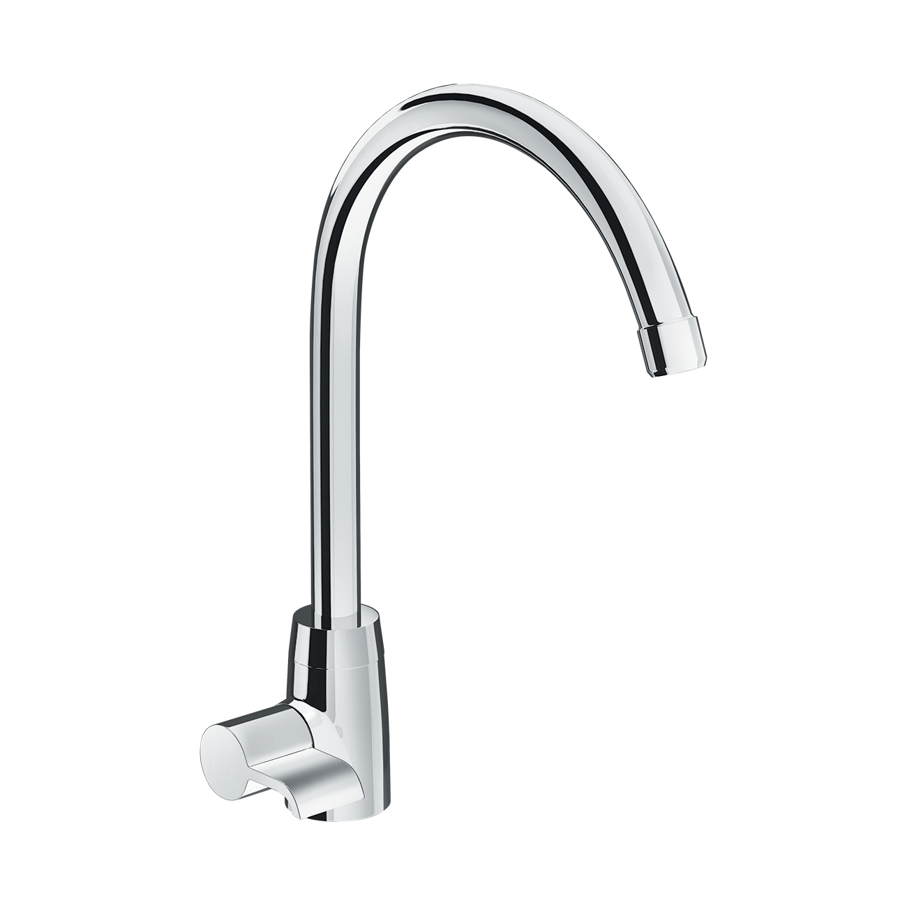
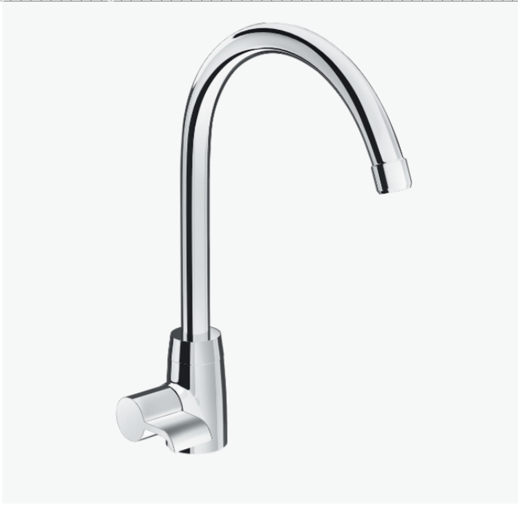
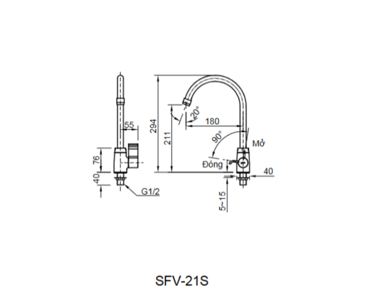

Căn bếp của bạn cần một thiết bị chất lượng, dễ sử dụng và có khả năng chống chọi lại môi trường ẩm ướt, dầu mỡ? Vòi bếp SFV-21 chính là sản phẩm dành cho bạn. Sản phẩm tập trung vào công năng cốt lõi và chất lượng Nhật Bản, mang lại giải pháp vệ sinh bếp núc hiệu quả và kinh tế.Đặc điểm của Vòi bếp SFV-21Thiết kế cổ ngỗng, xoay chuyển linh hoạtVòi chậu rửa bếp SFV-21 nổi bật với thiết kế cổ ngỗng đặc trưng, giúp dòng nước chảy đều hơn và ngăn nước bắn ra ngoài khu vực bồn rửa, giúp mặt bếp luôn khô ráo và sạch sẽ.Vòi bếp INAX SFV-21 có khả năng xoay dễ dàng, giúp bạn chuyển đổi thao tác giữa các khu vực trong bồn rửa chén, kể cả bồn đôi một cách linh hoạt, tiện dụng khi rửa chén hoặc các loại rau củ quả..Ngoài ra, tay gạt của vòi được thiết kế để cảm thấy êm ái khi sử dụng, giúp bạn dễ dàng kiểm soát lưu lượng nước một cách nhanh chóng và chính xác.Chất liệu bền bỉ và đảm bảo an toànChất lượng của vòi bếp SFV-21 là tựa như lời cam kết mạnh mẽ từ INAX với tuổi thọ được đảm bảo trên 10 năm nhờ vào vật liệu cao cấp:Van sứ chống rò rỉ: Van điều khiển bằng sứ có độ bền cao, đảm bảo vòi vận hành trơn tru hơn. Đặc biệt, bộ phận này còn có khả năng chống rò rỉ nước tuyệt đối, giúp bạn tiết kiệm nước hiệu quả, bảo vệ môi trường.Chất liệu đồng thau cao cấp: Vòi được chế tạo từ chất liệu đồng thau cao cấp, không gây nhiễm khuẩn cho nước, đảm bảo nguồn nước luôn sạch sẽ, an toàn cho việc rửa thực phẩm và chén bát.Lớp mạ cao cấp: Lớp mạ Crom-Niken sáng bóng bảo vệ vòi khỏi sự ăn mòn và trầy xước, duy trì vẻ ngoài đẹp đẽ lâu dài.Phun bọt chống bắn: Vòi có đầu phun bọt làm dịu dòng chảy, ngăn nước bắn tung tóe và tạo cảm giác mềm mại khi sử dụng.Với mức giá thành tiết kiệm, Vòi chậu rửa bếp lạnh INAX SFV-21 là lựa chọn thông minh, mang lại sự tiện nghi và độ tin cậy cao cho mọi căn bếp Việt.Bản vẽ Vòi bếp SFV-21Thông số kỹ thuậtTên sản phẩmVòi bếp SFV-21DạngVòi bếp lạnhChất liệu- Van điều khiển bằng sứ có độ bền cao, chống rò rỉ nước - Chất liệu đồng thau không gây nhiễm khuẩn cho nước - Mạ Crom-NikenKích thước180 x 294 mm (Cao x Rộng)Tính năng- Tay gạt êm ái, giúp nước nhanh chóng chảy ra và dễ dàng điều chỉnh nhiệt. - Tuổi thọ trên 10 năm. - Phun bọt chống bắn. - Giá thành tiết kiệmThương hiệuINAXThiết kế- Dạng cổ ngỗng giúp nước không bị bắn ra ngoài - Có thể xoay dễ dàng giữa 2 bồn rửa.Khác- Hotline tư vấn và bảo hành: 18006633
Vòi bếp SFV-21
Vòi bếp thương hiệu INAX.
Đã cập nhật danh sách yêu thích.
DANH MỤC: Vòi bếp
MÃ SẢN PHẨM: SFV-21
DEPTH: 0mm
HEIGHT: 180mm
WIDTH: 294mm
Căn bếp của bạn cần một thiết bị chất lượng, dễ sử dụng và có khả năng chống chọi lại môi trường ẩm ướt, dầu mỡ? Vòi bếp SFV-21 chính là sản phẩm dành cho bạn. Sản phẩm tập trung vào công năng cốt lõi và chất lượng Nhật Bản, mang lại giải pháp vệ sinh bếp núc hiệu quả và kinh tế.Đặc điểm của Vòi bếp SFV-21Thiết kế cổ ngỗng, xoay chuyển linh hoạtVòi chậu rửa bếp SFV-21 nổi bật với thiết kế cổ ngỗng đặc trưng, giúp dòng nước chảy đều hơn và ngăn nước bắn ra ngoài khu vực bồn rửa, giúp mặt bếp luôn khô ráo và sạch sẽ.Vòi bếp INAX SFV-21 có khả năng xoay dễ dàng, giúp bạn chuyển đổi thao tác giữa các khu vực trong bồn rửa chén, kể cả bồn đôi một cách linh hoạt, tiện dụng khi rửa chén hoặc các loại rau củ quả..Ngoài ra, tay gạt của vòi được thiết kế để cảm thấy êm ái khi sử dụng, giúp bạn dễ dàng kiểm soát lưu lượng nước một cách nhanh chóng và chính xác.Chất liệu bền bỉ và đảm bảo an toànChất lượng của vòi bếp SFV-21 là tựa như lời cam kết mạnh mẽ từ INAX với tuổi thọ được đảm bảo trên 10 năm nhờ vào vật liệu cao cấp:Van sứ chống rò rỉ: Van điều khiển bằng sứ có độ bền cao, đảm bảo vòi vận hành trơn tru hơn. Đặc biệt, bộ phận này còn có khả năng chống rò rỉ nước tuyệt đối, giúp bạn tiết kiệm nước hiệu quả, bảo vệ môi trường.Chất liệu đồng thau cao cấp: Vòi được chế tạo từ chất liệu đồng thau cao cấp, không gây nhiễm khuẩn cho nước, đảm bảo nguồn nước luôn sạch sẽ, an toàn cho việc rửa thực phẩm và chén bát.Lớp mạ cao cấp: Lớp mạ Crom-Niken sáng bóng bảo vệ vòi khỏi sự ăn mòn và trầy xước, duy trì vẻ ngoài đẹp đẽ lâu dài.Phun bọt chống bắn: Vòi có đầu phun bọt làm dịu dòng chảy, ngăn nước bắn tung tóe và tạo cảm giác mềm mại khi sử dụng.Với mức giá thành tiết kiệm, Vòi chậu rửa bếp lạnh INAX SFV-21 là lựa chọn thông minh, mang lại sự tiện nghi và độ tin cậy cao cho mọi căn bếp Việt.Bản vẽ Vòi bếp SFV-21Thông số kỹ thuậtTên sản phẩmVòi bếp SFV-21DạngVòi bếp lạnhChất liệu- Van điều khiển bằng sứ có độ bền cao, chống rò rỉ nước - Chất liệu đồng thau không gây nhiễm khuẩn cho nước - Mạ Crom-NikenKích thước180 x 294 mm (Cao x Rộng)Tính năng- Tay gạt êm ái, giúp nước nhanh chóng chảy ra và dễ dàng điều chỉnh nhiệt. - Tuổi thọ trên 10 năm. - Phun bọt chống bắn. - Giá thành tiết kiệmThương hiệuINAXThiết kế- Dạng cổ ngỗng giúp nước không bị bắn ra ngoài - Có thể xoay dễ dàng giữa 2 bồn rửa.Khác- Hotline tư vấn và bảo hành: 18006633
DANH MỤC: Vòi bếp
MÃ SẢN PHẨM: SFV-21
DEPTH: 0mm
HEIGHT: 180mm
WIDTH: 294mm